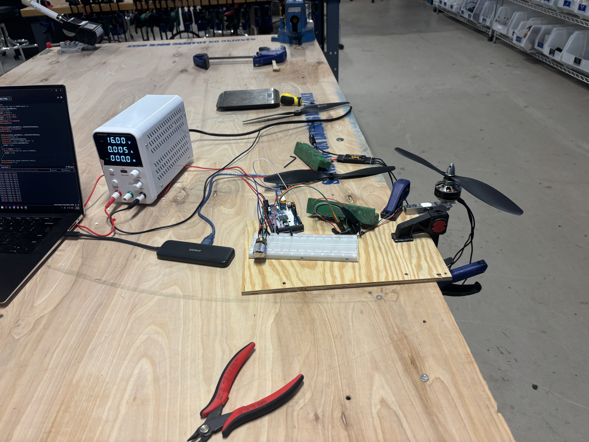
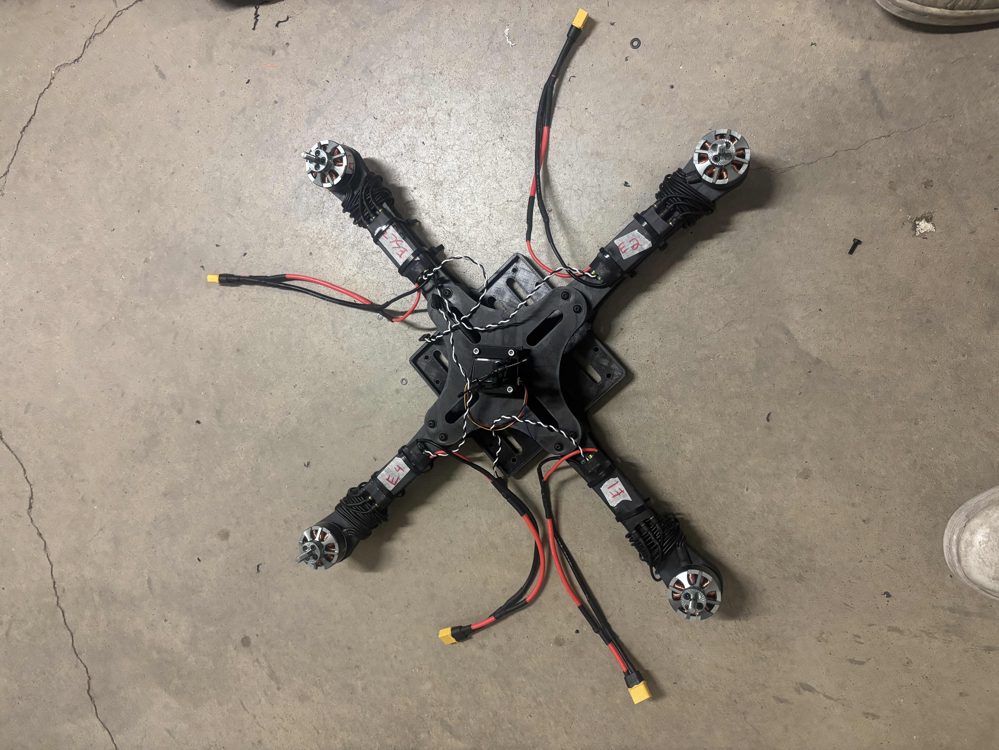

Custom Quadcopter
Custom-designed and flight-tested drone — $350 budget
 Images/Quadcopter/FullAssembly.JPG
Images/Quadcopter/FullAssembly.JPG
Description
Designed, built, and flight-tested a custom quadcopter, managing the development process from SolidWorks CAD modeling and 3D printing to electronics integration and PX4 configuration. Designed a lightweight, impact-resistant frame using nylon filament, optimizing its geometry for structural strength, weight savings, and ease of assembly. Refined the design through two iterations and optimized 3D-printing settings to improve the final build.
Integrated the flight controller, four individual electronic speed controllers (ESCs), motors, receiver, and LiPo power system, including building a custom power distribution board and calibrating the ESCs. Troubleshot electrical and mechanical issues throughout assembly and incorporated vibration-resistant locknuts and a simplified fastening system requiring just 10 fasteners to improve reliability and ease of maintenance.
Validated propulsion performance through thrust and power measurements, achieving 7.3 g/W of thrust efficiency at 50% throttle (490 g at 67 W) and approximately 700 g of thrust per motor at 125 W. The completed quadcopter achieved over 20 minutes of flight time at a total takeoff weight of approximately 1.75 kg, with a theoretical maximum thrust-to-weight ratio of 1.6:1. The project stayed within a $350 budget. Additional documentation, including project development and build details, is available on my Instagram.
Constraints
- $350 total budget for all components and materials
- Frame limited to 3D-printed designs only (no machined or purchased frames)
- Inherited motors from a previous build — all other components designed around them
Goals
- Design and build a fully functional quadcopter from scratch within budget
- Achieve over 20 minutes of flight time at ~1.75 kg takeoff weight
- Reach a thrust-to-weight ratio of at least 1.6:1
- Optimize thrust efficiency (achieved 7.3 g/W at 50% throttle)
- Create a lightweight, impact-resistant nylon frame optimized for 3D printing
- Simplify maintenance with a 10-fastener assembly and vibration-resistant locknuts
Gallery

TestingThrust.jpeg
FrameAssembly.JPGVideo
Full flight test of the completed quadcopter.
Testing the circuit, power distribution board, and full-throttle motor test with the propeller mounted to a load cell for accurate thrust measurements.
Using a digital laser tachometer to verify all motors and ESCs were running at the same RPM. This was necessary to diagnose and resolve a delay/tuning issue, ensuring consistent motor behavior across all four channels before flight.